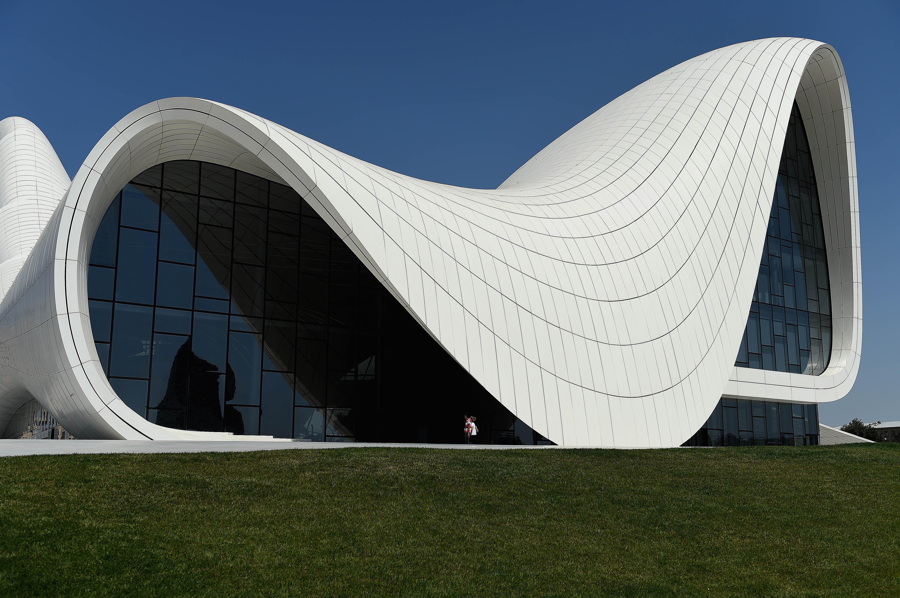

Ancient Architecture
Ancient architecture represents the cornerstone of our understanding of early human civilizations, embodying the cultural, religious, and societal norms of their times. From the towering pyramids of Egypt, constructed as monumental tombs for pharaohs, to the classical orders of Greek temples, dedicated to the pantheon of gods, each structure tells a story of ingenuity and spirituality.
Modernist Architecture
Modern architecture represents a departure from the traditional, embracing innovation, simplicity, and functionality. Characterized by minimalistic designs, the use of new materials like steel, glass, and concrete, and the incorporation of technology, it seeks to create spaces that reflect the present and future of human living. Architects like Frank Lloyd Wright, Le Corbusier, and Mies van der Rohe pioneered this movement, emphasizing open floor plans, the harmonious relationship between the structure and its surroundings, and the principle that form follows function.